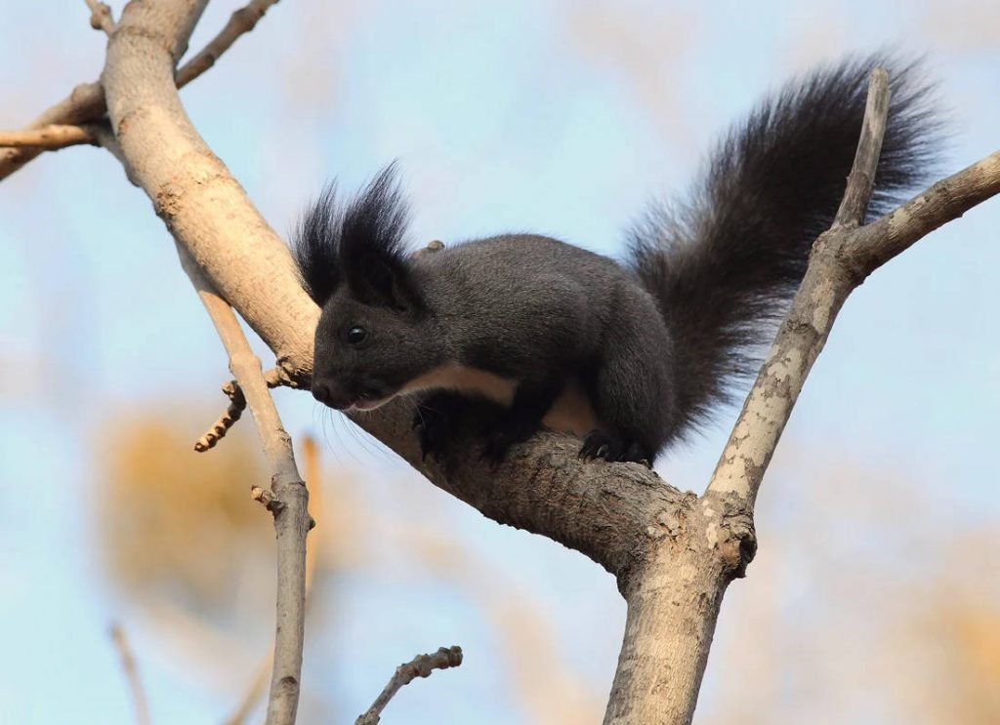
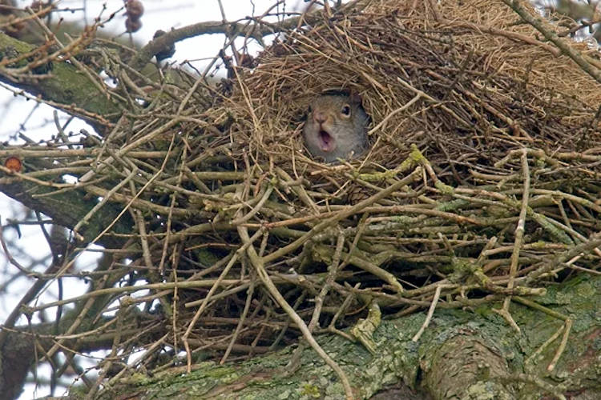
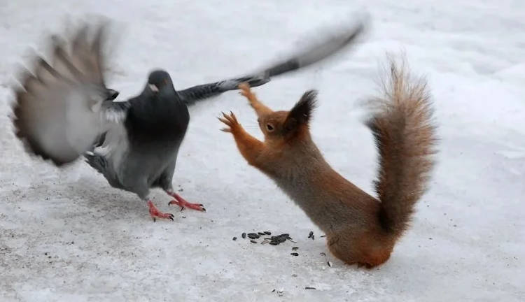
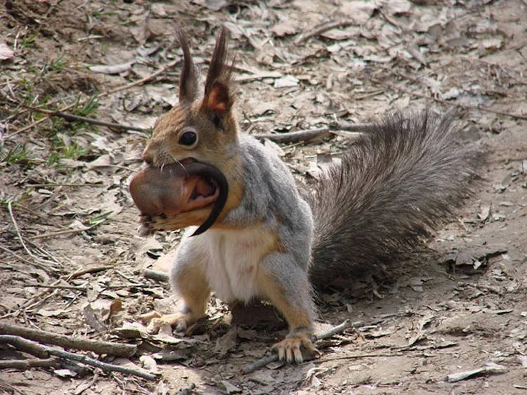

Гуляючи парком, думаю, вам не раз доводилося зустрічати цю милашку. “Ой, мама, дивися, білочка!” — кричить малеча. Ці тваринки справді є гарнюніми, але вони мають і другу, темну, сторону, яку вміло приховують.
Господарка лісів і парків
Білка — повноправна господарка наших лісів. Вона мешкає практично по всій території України. В українській мові, згідно словника Грінченка, вона має ще назву вивірка.
Габаритами вона не може похвастатися: довжина тіла не перевищує 30 сантиметрів, з яких дві третини — пухнастий хвіст. Його звірятко має не лише для краси. По-перше, його білочка використовує щоб грітися. У люті морозні дні вона закутується своїм пишним хвостиком, як теплою ковдрою. По-друге, хвіст служить кермом під час польоту, коли вона стрибає з запаморочливої висоти. Завдяки потужним заднім лапкам ця малявка одним стрибком може долати до 15 метрів в довжину.
Білки бувають не лише рудими, але й бурими, сірими і, навіть, чорними. Свої апартаменти вивірки (щоб ви звикали до цієї назви) влаштовують в дуплах старих дерев. У хвойних лісах тваринки в’ють справжнісінькі кулясті гнізда — гайна. Якщо дупло знайти не вдалося, а будувати щось самому ліньки, нахаба віроломно займає гнізда птахів або селиться в шпаківні. Одна вивірка займає одразу кілька гнізд, періодично змінюючи місце прописки. Таким чином гризуни рятуються від паразитів, та й хижаки не знають їхньої точної адреси.
Йди звісид! Тебе ніхто не звав у гості!
Чим харчуються білки
Їдять вивірки горішки, насіння, гриби і ягоди. Розгризти усе це нашим героїням допомагають потужні м’язи, щелепи і гострі різці, які у гризунів ростуть усе життя.
Оскільки взимку їстівного добра немає, завбачлива тваринка споруджує цілі комори з провіантом. Більш того, таких комор у білки кілька, і всі вони розташовані в різних місцях. Гризун знає, що любителів поживитися чужими запасами в лісі багато, тому якщо одну зі схованок пограбують, всі інші залишаться в цілості. Але і сама білка не обділена бандитськими рисами. А свій раціон наша героїня розбавляє ще й… м’ясом.
Ця пухнаста милашка влаштовує справжній геноцид, нещадно знищуючи нещасних гризунів, птахів і плазунів! Але навіщо білка ступила на цю слизьку доріжку? По-перше, тому що може. Гострі зуби у білки є, потужні щелепи – теж. Звірятко з легкістю розколює горіхи, так що проломити чиюсь черепушку їй не становить жодних труднощів. По-друге, таким чином вивірки заповнюють дефіцит білків і мікроелементів. Тому мишку або пташечку білка хрумкає, як вітамінки. По-третє, під удар рудої бестії потрапляють ті, хто є її прямими суперниками за харчові ресурси. Тобто білка в кращих традиціях мафії кривавим способом позбавляється своїх конкурентів! Ну, а після розправи з ворогом, не пропадати ж добру, багатому білками та іншими корисними речовинами.
Тепер по-іншому дивитеся на це фото?
Розмноження білок
За сезон білки встигають зробити два виводка. Шлюбні ігри починаються навесні. За однією самкою ганяється ціла юрба самців. Обранець, що довів свою крутість перед самочкою, залишається з жінкою ненадовго. Коли панночка усвідомила, що скоро стане матусею, то жене батька своїх дітей в шию, навіть аліментів з нього не вимагаючи. Ось вона, сильна і незалежна жінка!
Через місяць на світ з’являється від 3 до 8 білченят. Цілих два місяці матуся буде піклуватися про своїх діточок: годувати їх, захищати від ворогів і переносити з гнізда в гніздо, щоб молодняк не загризали кліщі і блохи.
Не переживайте, це не канібалізм. Просто турботлива мама переносить своє дитинча в інше місце
На жаль, першу зиму переживає лише 15% молодняку. Якби було інакше, всіх птахів і дрібних гризунів у лісі з’їдали б ці руденькі бандити. Якщо ж дітлахи пережили морози успішно, то через рік вони самі будуть готові плодити маленьких пухнастих вбивць, що прикидаються милашками.